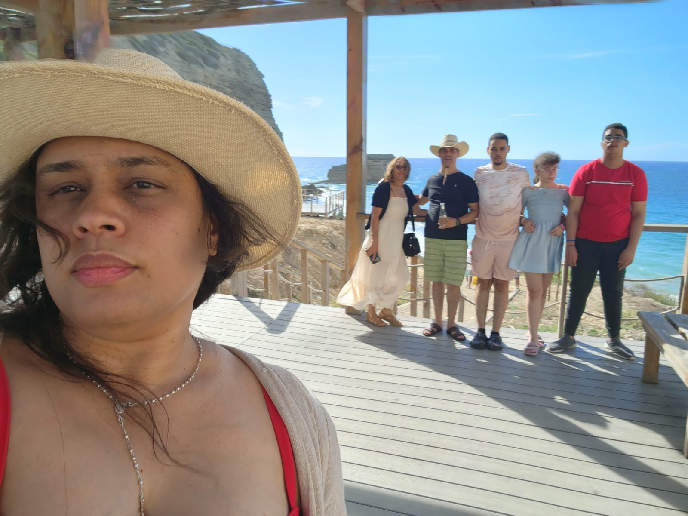
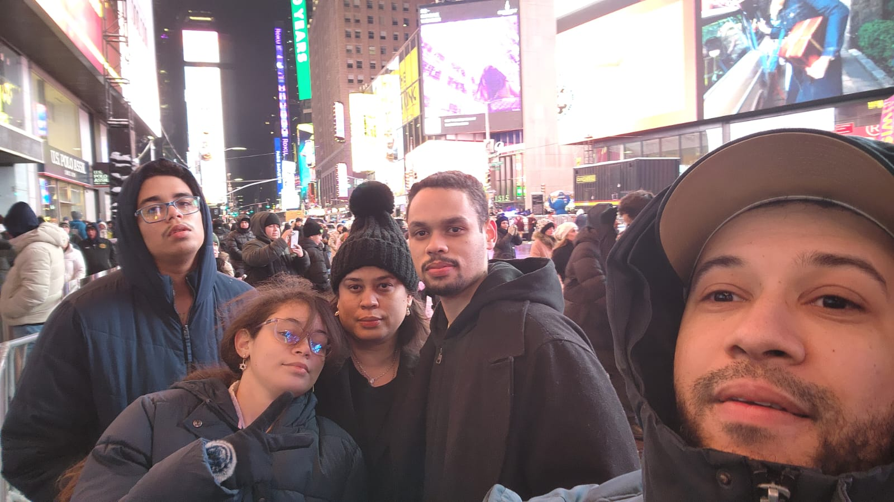
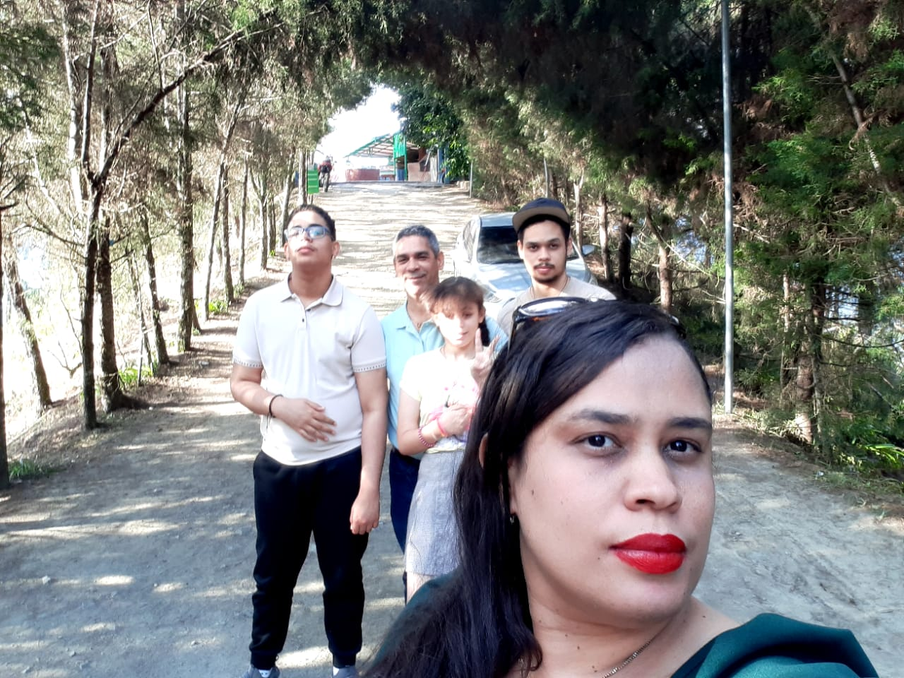
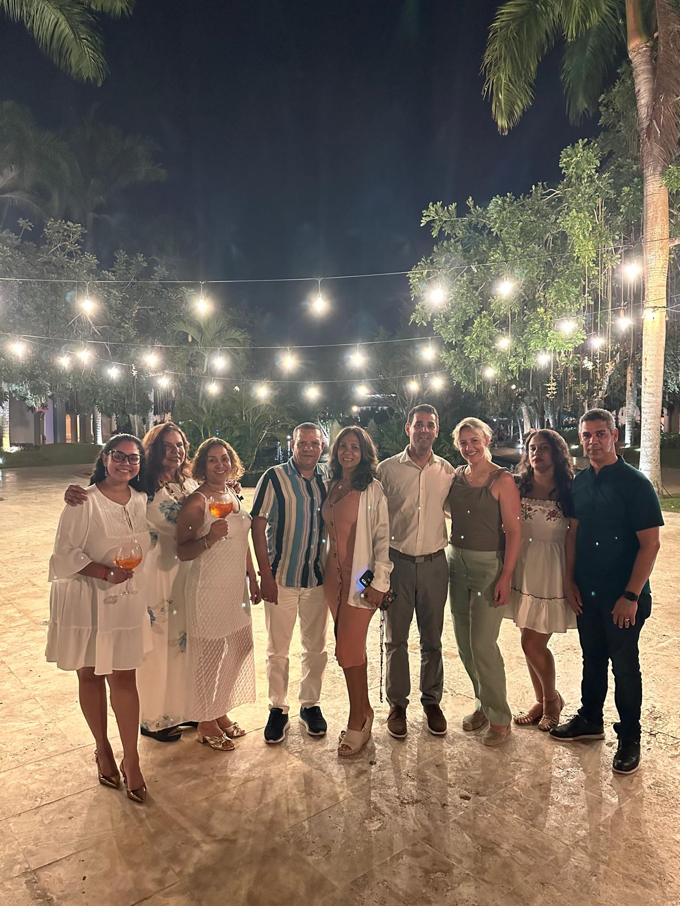
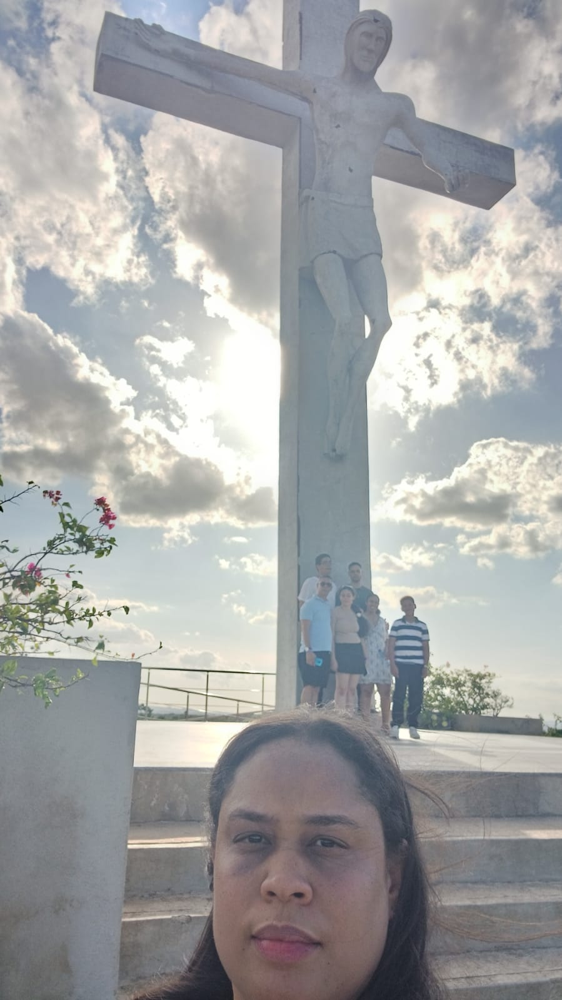
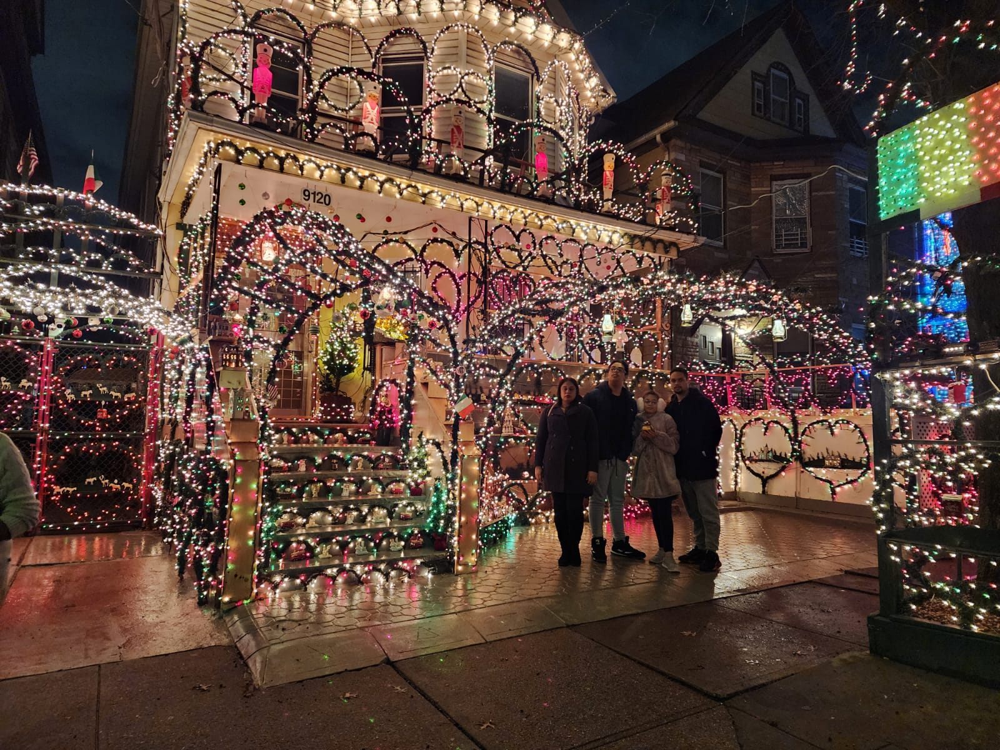

Amabilidad
Siempre se preocupa por todos sus seres queridos. Siempre está ahí cuando nos pasa algo, y nunca deja de amarnos.
✈ CORREO AÉREO · PARA MAMÁ
Un pasaporte lleno de sellos.
Una vida entera de aventuras.
CON CARIÑO, DESDE CASA
Julio, 2026
Querida mamá,
No sé si te lo digo tan seguido como debería, pero sos una de las personas que más admiro en este mundo. Desde que tengo memoria fuiste la que sostuvo todo sin pedir nada a cambio, la que encontraba la manera de hacer que cualquier lugar se sintiera como hogar.
Gracias por mostrarnos el mundo con tu curiosidad y tu alegría. Esta página es un pequeño mapa de todo lo que representás para nosotros.
Con todo nuestro amor,
Tu familia
ÁLBUM DE VIAJE






SU RUTA
Nació en San Francisco de Macoris, el punto de partida de esta historia.
El comienzo de todo: se casó con papá, y juntos armaron el hogar del que salieron todas nuestras propias aventuras.
El primer nuevo pasajero se sube a su viaje.
La familia sigue creciendo.
Y el equipo quedó completo.
Playa, montaña, ciudad o santuario — para ella el destino nunca importó tanto como quién la acompañaba. De Santo Cerro a Nueva York, lo que buscaba no era el lugar, éramos nosotros.
Y acá estamos, celebrándote, con muchas más viajes por delante.
SELLOS DE SU PASAPORTE
Siempre se preocupa por todos sus seres queridos. Siempre está ahí cuando nos pasa algo, y nunca deja de amarnos.
Siempre piensa más en los demás que en sí misma, hasta el punto de comprarnos cosas con tal de hacernos felices, aunque eso le cueste mucho dinero.
Cada vez que hacemos algo mal, siempre nos corrige, con la intención de que seamos mejores personas.
Es buenísima cocinando una rica comida, limpiando, organizando, y educando con paciencia a pesar de los ruidos.